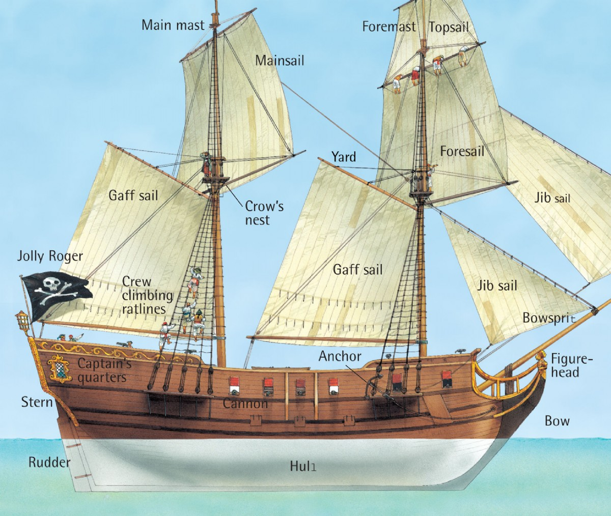

Ship Anatomy
Hull
Hull - the main body of a ship or other vessel, including the bottom, sides, and deck but not the masts, superstructure, rigging, engines, and other fittings.
Back to TopStern
- Stern - the rearmost part of a ship or boat.
- Rudder - a flat piece, usually of wood, metal, or plastic, hinged vertically near the stern of a boat or ship for steering. Usually connected to the helm (wheel) of the ship.
- Captain's Quarters - The room at the stern of the ship where the Captain slept. Usually furnished well compared to the crew's quarters and was indepedent from the rest of the ship.
Bow
- Bow - the front end of a ship.
- Figure-head - a carving, typically a bust or a full-length figure, set at the prow of an old-fashioned sailing ship. These were staples of any ship and were ways of identy and wealth.
- Bowsprit - a spar extending forward from a ship's bow, to which the forestays are fastened.
Anchor
Anchor - a heavy object attached to a rope or chain and used to moor a vessel to the sea bottom, typically one having a metal shank with a ring at one end for the rope and a pair of curved and/or barbed flukes at the other.
Back to TopCannon
Cannon - a large, smooth bore, heavy pieces of artillery used in sea warfare. These were located on the top deck and becuase of the times, were relatively inaccurate. Required a long time to load and had to be tied down securely to keep them from rolling off the ship.
Back to TopJolly Roger
Jolly Roger - a pirate's flag with a white skull and crossbones on a black background. This was a notorious symbol to see on the open ocean. On pirate ships, this would replace the ship's nationality flag.
Back to TopMain Mast
- Main Mast - the principal mast of a ship, typically the second mast in a sailing ship of three or more masts. The mast, was a tall beam that extended vertically and held the sails.
- Mainsail - the principal sail of a ship, especially the lowest sail on the mainmast in a square-rigged vessel. The sail set on the after side of the mainmast in a fore-and-aft-rigged vessel.
- Crow's Nest - a shelter or platform fixed near the top of the mast of a vessel as a place for a lookout to stand.
Gaff Sail
Gaff Sail - A form of fore-and-aft sails. Fore-and-aft sails are set along the keel (center part of the ship that runs along the bottome of the hull) of the ship as opposed to being perpendicular to it. These are also called fore-and-aft rigged.
Back to TopFore Sail
- Foresail - The main sail on the foremast
- ForeMast - The mast located to the bow (forward most point) of the ship. Holds the foresail and foremast topsails.
- Yard - A long spar that ran across a ship's mast for a sail to hang from.
Jib Sail
Jib - a triangular staysail set forward of the forwardmost mast. This was another sail that helped to balance out the flow of the wind across the sails.
Back to Top